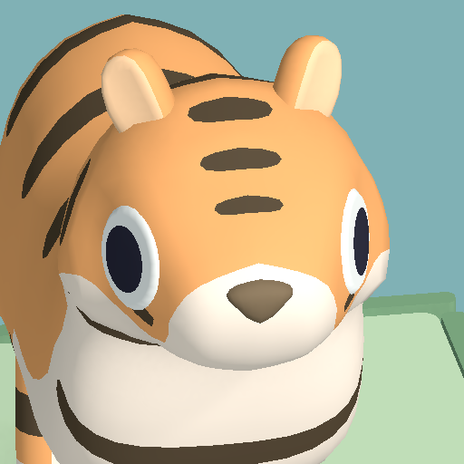
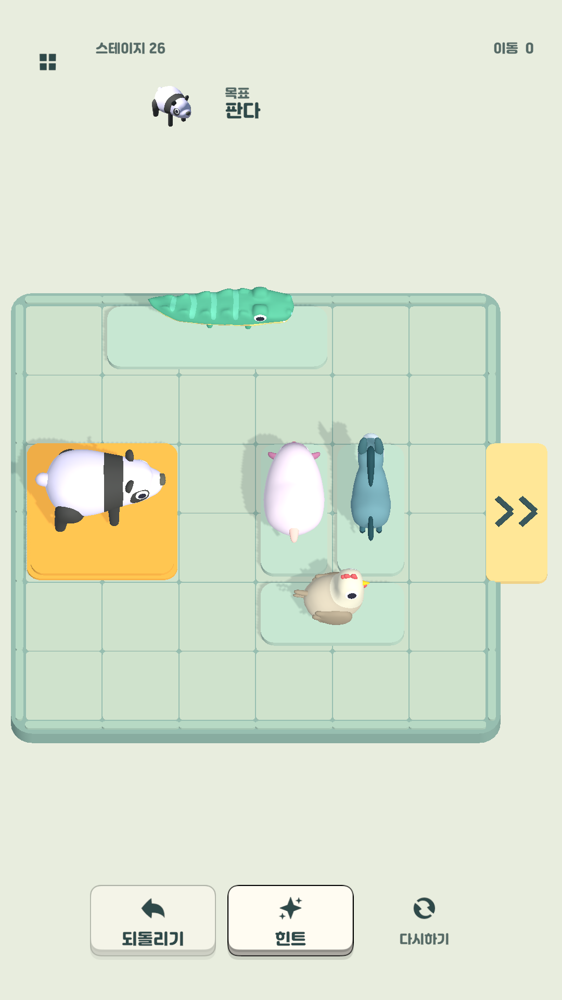
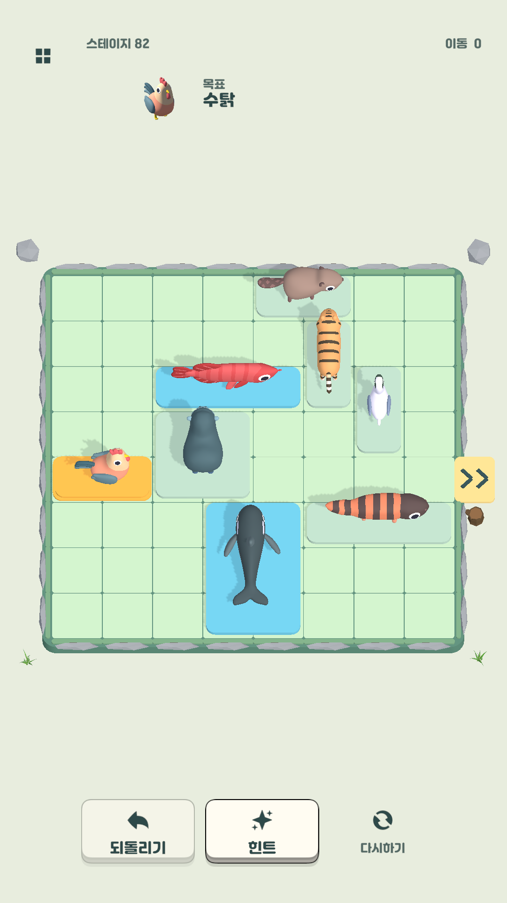
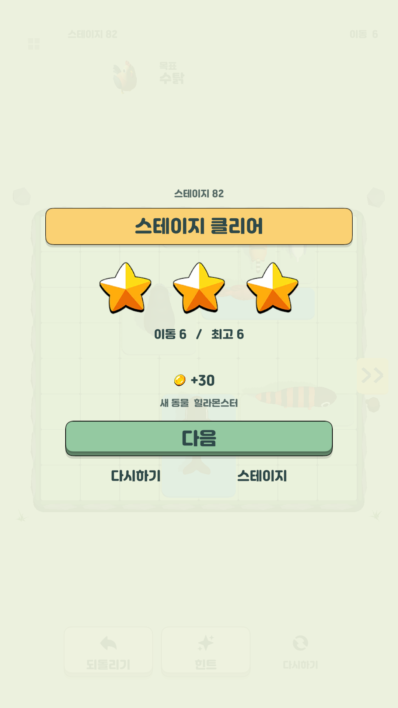
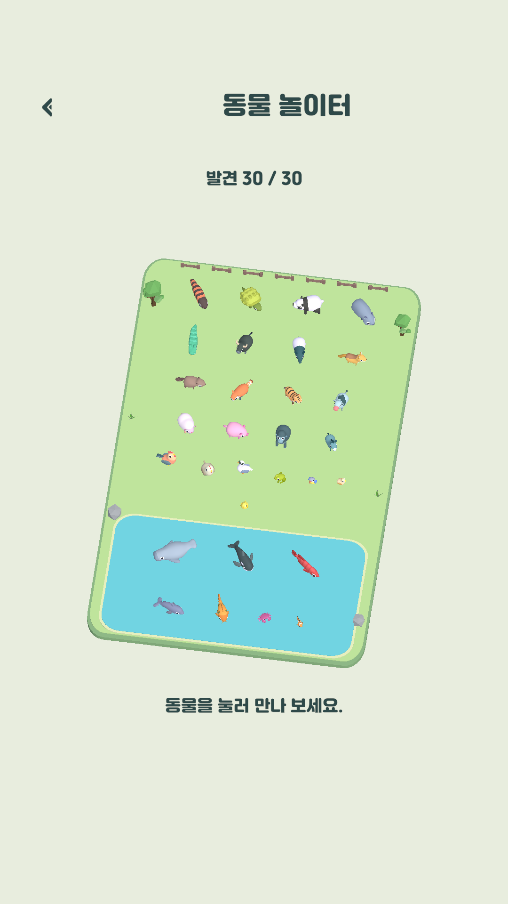

내 속도로 차근차근
일반 스테이지
30종의 동물이 등장하는 300개 스테이지. 시간에 쫓기지 않고 길을 찾아보세요. 더 적은 이동으로 별과 최고 기록을 모을 수 있어요.

Animal Escape동물 탈출 퍼즐
출구는 오른쪽인데, 다른 동물들이 앞을 막고 있어요. 하나씩 밀어서 판다가 지나갈 공간을 만들어 주세요.
Android · 무료 · 광고 포함

동물을 누른 채 움직이면 돼요. 긴 동물은 놓인 방향을 따라 움직이고, 작은 동물은 가로와 세로로 이동할 수 있어요.
목표 동물을 출구까지 밀면 스스로 빠져나갑니다. 일반 스테이지에는 시간 제한이 없으니, 앞을 막은 동물부터 천천히 살펴보세요.
한 수가 아쉬우면 되돌리기. 일반 스테이지와 매일 퍼즐에서는 다음 움직임을 알려주는 힌트도 있어요.
천천히 생각해도, 빠르게 도전해도 좋아요.
내 속도로 차근차근
30종의 동물이 등장하는 300개 스테이지. 시간에 쫓기지 않고 길을 찾아보세요. 더 적은 이동으로 별과 최고 기록을 모을 수 있어요.
매일 하나의 도전
일반 스테이지와는 별도로 준비된 퍼즐을 날짜에 맞춰 만나요. 오늘의 퍼즐을 풀고, 최소 이동으로 Perfect에도 도전해 보세요.
스테이지 3 완료 후 열려요.
3분 동안 얼마나 구조할까요?
모두 같은 퍼즐 순서로 힌트 없이 도전해요. 시간이 남는 동안 퍼즐이 계속 이어지고, Perfect마다 3초를 더 받아요. 추가 시간은 한 판에 최대 45초예요.
스테이지 20 완료 후 열려요.
Google Play Games 온라인 랭킹에서 무한 모드 기록을 비교해 보세요. 같은 순서, 같은 규칙으로 얼마나 많은 동물을 구조할 수 있을까요?
게임 화면


길게 누운 악어는 옆으로, 넓은 몸집의 동물은 넉넉한 공간으로. 동물의 모양을 보고 이동 순서를 생각해야 해요.
한 번 풀었다면 더 적게 움직여서 다시 도전해 보세요. 가장 잘 푼 기록은 별과 함께 남아요.
300개의 스테이지에 30종의 동물이 등장합니다. 만난 동물은 도감에 기록되고, 모은 코인으로 보드 테마도 바꿀 수 있어요.

발견한 동물들이 초원과 연못을 자유롭게 돌아다녀요. 두 손가락으로 확대하고 화면을 밀어 둘러보세요. 동물을 누르면 도감에서 더 자세히 만날 수 있어요.
클리어한 스테이지와 별, 발견한 동물, 누적 플레이 기록과 무한 모드 최고 기록을 한눈에 확인하세요. 모은 코인으로 보드 테마와 출구 스타일도 바꿀 수 있어요.
Google Play Games에 연결해 진행 상황을 백업하고 동기화할 수 있어요. 로그인하지 않아도 퍼즐을 즐길 수 있으며, 온라인 랭킹과 클라우드 저장에는 인터넷 연결이 필요해요.
한국어 · English · 日本語 지원
Animal Escape는 Google Play에서 무료로 받을 수 있습니다. 플레이하다 궁금한 점이나 문제를 발견하면 메일로 알려 주세요.
개발자에게 문의하기 ↗